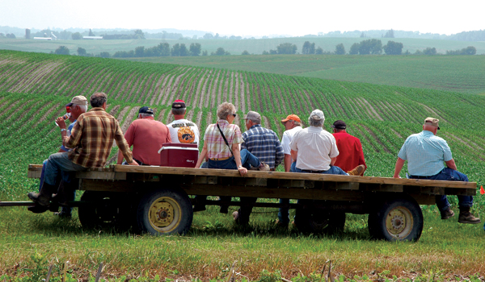
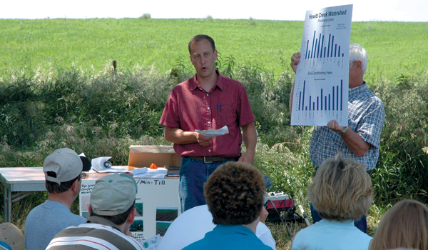
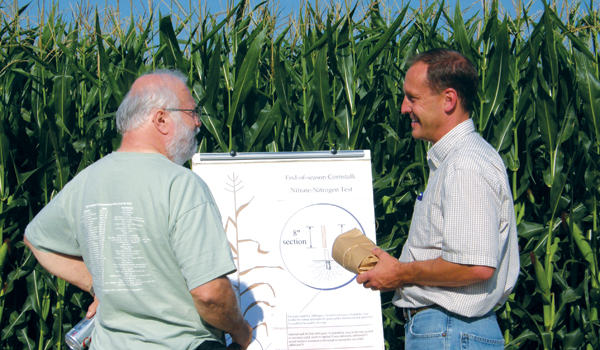
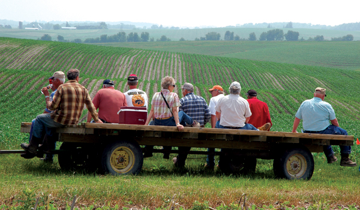
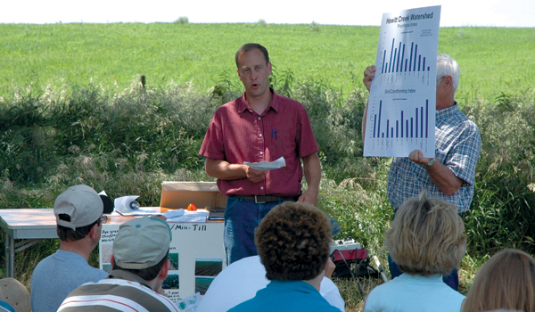
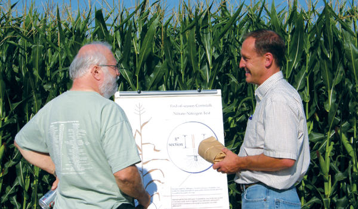
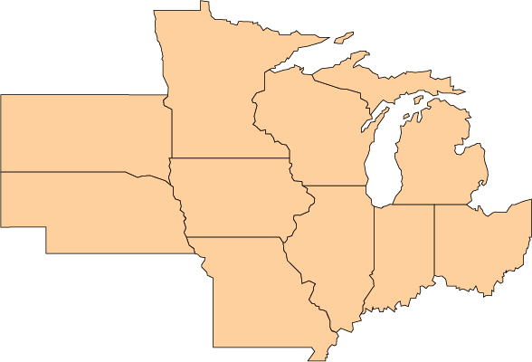

Extension--Outreach to Farmers
The project's extension directive promotes participatory exchange of climate and agricultural knowledge among farmers, extension educators and the project team.
An expansive network of established and newly initiated farmer groups serve as the structure for evaluating the crop management practices being tested across the field research sites. Extension professionals are experienced in testing new technologies, strategies and group techniques to encourage farmer learning and implementation of appropriate adaptive management approaches.
 





Summer meeting attended by local farmers at a research site.
Dan Barker, Iowa State University, discusses research findings with area farmers at a field-based meeting.
Chad Ingels, Iowa State University, discusses research findings with area farmers at a field-based meeting.
Farmer participants attending a field meeting in Iowa.
Chad Ingels, Iowa State University, discusses research findings with area farmers at a field-based meeting.
Chad Ingels, Iowa State University, discusses nitrogen sampling techniques with a farmer.
Extension, Social and Economic research questions
Project videos discussing the issues and our research.
Scientists and Staff Involved in Extension and Outreach to Farmers and Industry
Click on a state below for Extension Educators.
